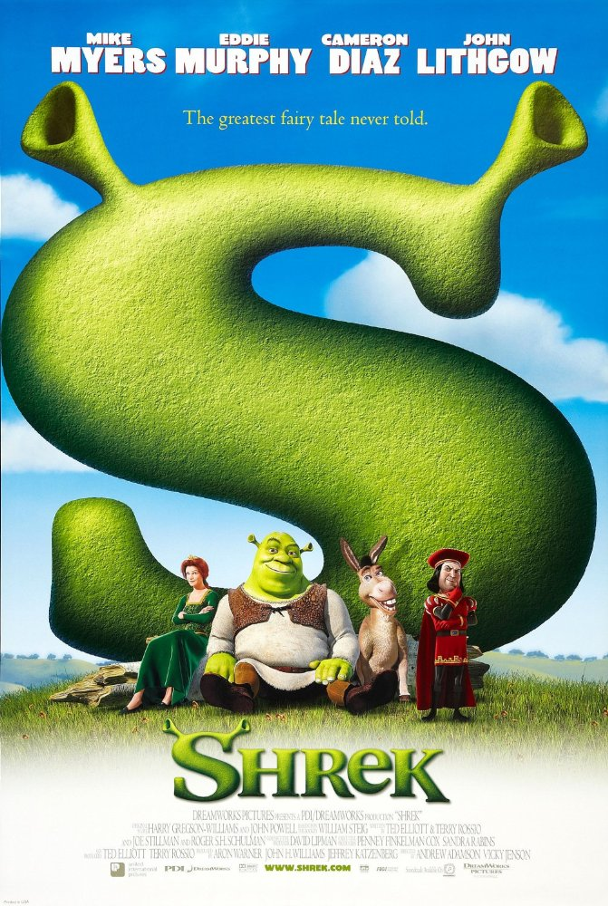

Storyline
30 years after the defeat of Darth Vader and the Empire, Rey, a scavenger from the planet Jakku, finds a BB-8 droid that knows the whereabouts of the long lost Luke Skywalker. Rey, as well as a rogue stormtrooper and two smugglers, are thrown into the middle of a battle between the Resistance and the daunting legions of the First Order.
Release Date
14 December 2015
Genres
Action | Adventure | Fantasy | Sci-Fi
Storyline
When his brother is killed in a robbery, paraplegic Marine Jake Sully decides to take his place in a mission on the distant world of Pandora. There he learns of greedy corporate figurehead Parker Selfridge's intentions of driving off the native humanoid "Na'vi" in order to mine for the precious material scattered throughout their rich woodland. In exchange for the spinal surgery that will fix his legs, Jake gathers intel for the cooperating military unit spearheaded by gung-ho Colonel Quaritch, while simultaneously attempting to infiltrate the Na'vi people with the use of an "avatar" identity.
Release Date
17 December 2009
Genres
Action | Adventure | Fantasy | Sci-Fi

Storyline
84 years later, a 100 year-old woman named Rose DeWitt Bukater tells the story to her granddaughter Lizzy Calvert, Brock Lovett, Lewis Bodine, Bobby Buell and Anatoly Mikailavich on the Keldysh about her life set in April 10th 1912, on a ship called Titanic when young Rose boards the departing ship with the upper-class passengers and her mother, Ruth DeWitt Bukater, and her fiance, Caledon Hockley. Meanwhile, a drifter and artist named Jack Dawson and his best friend Fabrizio De Rossi win third-class tickets to the ship in a game.
Release Date
20 February 1998
Genres
Drama | Romance

Storyline
Set within a year after the events of Batman Begins, Batman, Lieutenant James Gordon, and new district attorney Harvey Dent successfully begin to round up the criminals that plague Gotham City until a mysterious and sadistic criminal mastermind known only as the Joker appears in Gotham, creating a new wave of chaos. Batman's struggle against the Joker becomes deeply personal, forcing him to "confront everything he believes" and improve his technology to stop him. A love triangle develops between Bruce Wayne, Dent and Rachel Dawes.
Release Date
14 August 2008
Genres
Action | Crime | Drama | Thriller

Storyline
When a green ogre named Shrek discovers his swamp has been 'swamped' with all sorts of fairytale creatures by the scheming Lord Farquaad, Shrek sets out with a very loud donkey by his side to 'persuade' Farquaad to give Shrek his swamp back. Instead, a deal is made. Farquaad, who wants to become the King, sends Shrek to rescue Princess Fiona, who is awaiting her true love in a tower guarded by a fire-breathing dragon. But once they head back with Fiona, it starts to become apparent that not only does Shrek, an ugly ogre, begin to fall in love with the lovely princess, but Fiona is also hiding a huge secret.
Release Date
31 October 2001
Genres
Animation | Adventure | Comedy | Family | Fantasy